LIVE RADIO. PODCASTS. YOUR MUSIC.
A universe
of listening.
A station halfway around the world.
A story you can’t put down.
A song that feels like home.
Find them all in Farwave. Explore live radio, podcasts, and your own music, one planet at a time.
Download on the App StoreAvailable now for iPhone & iPad · iOS 18+
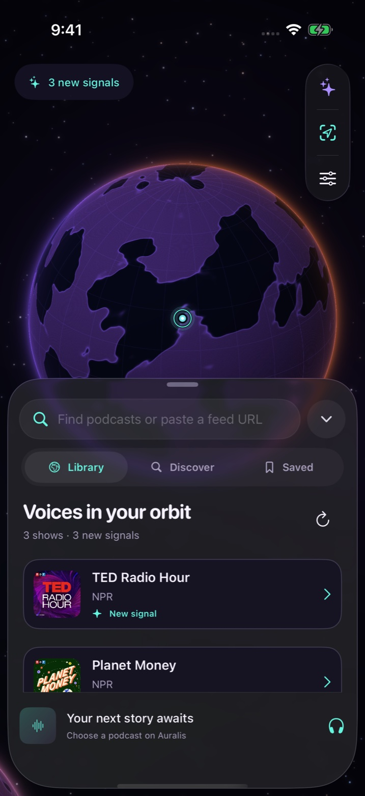
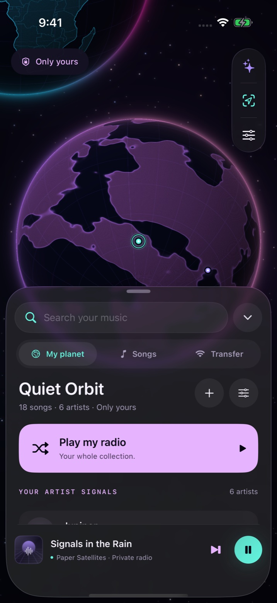
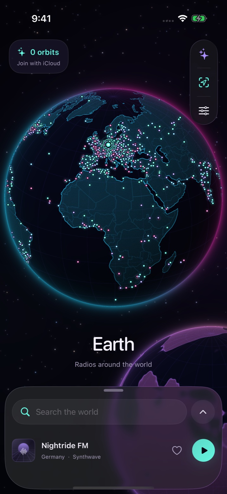
01 / EARTH LIVE RADIO
The world
is on air.
Spin the globe. Follow a signal. Hear what’s playing somewhere new.
Tap a station on Earth, browse by country, or search for a station or genre. Handpicked discoveries and “Take me anywhere” make room for a little serendipity.
- Explore thousands of stations worldwide
- Return to discoveries through listening history
- Keep listening in the background or over AirPlay
With Pro, save your favorites, sync them through iCloud, and bring live radio along with CarPlay.
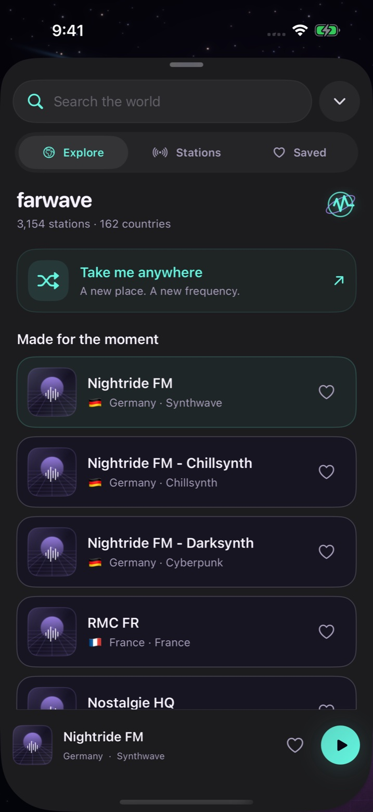
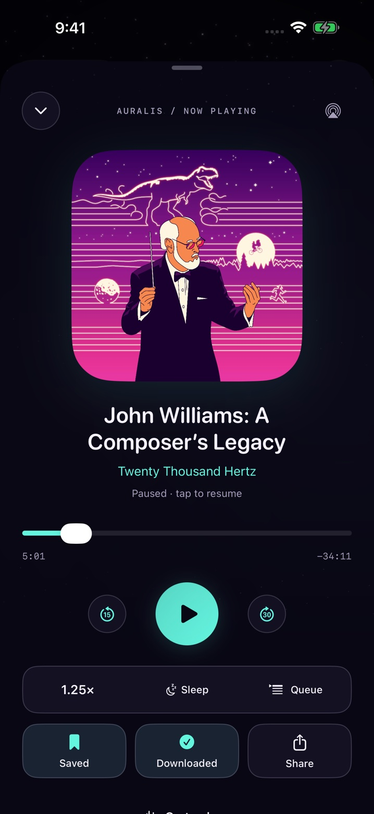
02 / AURALIS FARWAVE PRO
Good stories.
Their own orbit.
A whole planet for your podcasts.
Search for a show or paste an RSS feed. Follow your favorites to place them on Auralis, where new, unplayed episodes light up their signals.
- Download individual episodes for offline listening
- Pick up where you left off, with saved progress
- Listen at 0.5×–3× speed and arrange your queue
- Save episodes for later and set an end-of-episode sleep timer
Your shows, queue, progress, and downloads stay on this device. Following a show doesn’t automatically download it.
03 / MY PLANET FARWAVE PRO
Your music.
Your little world.
Give the songs you own a place of their own.
Import audio from Files or send it from your computer over the same Wi-Fi network. Each artist becomes a signal on your private planet.
- Tap an artist to shuffle their songs
- Turn your whole collection into a personal radio station
- Choose your planet’s name and color
- Listen to imported music offline
MP3 · M4A · AAC · WAV · AIFF · CAF · FLAC
Your library stays on your device. Bring your own audio; Farwave doesn’t include a music streaming catalog.
MAKE YOURSELF AT HOME PRO
Same universe.
Different atmosphere.
Seven visual themes take you from neon skies to antique maps, fantasy worlds, and pixel landscapes. Choose a matching app icon, or mix things up.
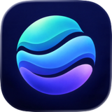
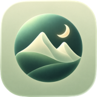
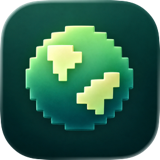
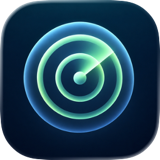
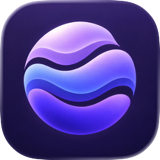
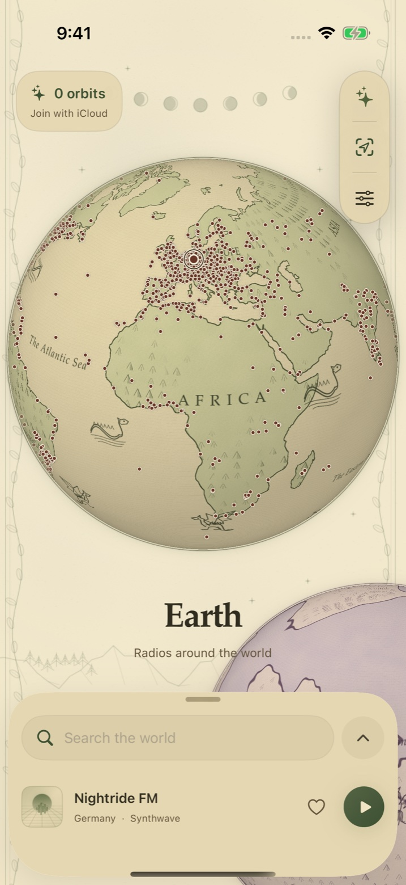
GO A LITTLE FURTHER
Farwave Pro
Start exploring live radio on Earth. Pro opens up the rest of your listening universe.
Good to knowFavorite radio stations
Save your discoveries and sync favorites with iCloud.
The podcast planet
Follow shows, build a queue, and download episodes.
Your private planet
Import your music, transfer over Wi-Fi, and listen offline.
CarPlay
Browse stations and control live radio from your car’s display.
Custom themes
Change the look of your entire listening universe.
Custom app icons
Choose a new look for Farwave on your Home Screen.
Home Screen widgets
Keep stations, favorites, and discoveries a tap away.
Available plans and prices are shown in the app before purchase. Pro access requires an active subscription or an eligible lifetime purchase. Restore purchases from Settings.
BEFORE YOU SET OFF
Good to know.
What can I listen to offline?
With Farwave Pro, you can play podcast episodes you have downloaded and music you have imported. Live radio, streaming podcasts, searches, and feed refreshes need an internet connection.
Does my library sync between devices?
Pro radio favorites can sync through iCloud when you’re signed in. Podcasts, listening progress, episode downloads, and imported music stay on each device. Farwave doesn’t require a separate account.
Does Farwave remove ads from radio or podcasts?
No. Stations and podcast publishers control their audio and may include advertisements. Farwave Pro doesn’t remove ads from their content, and availability can vary by provider or region.
Which devices does it support?
Farwave is built for iPhone and iPad running iOS or iPadOS 18 or later. It supports background audio, AirPlay, lock-screen controls, and sleep timers. Pro adds CarPlay for live radio and Home Screen widgets.
TAKE YOUR CURIOSITY SOMEWHERE NEW.
Find your Farwave.
Available now for iPhone & iPad.
Download on the App StoreNeed a hand?
A station that won’t play, a podcast question, or an idea for Farwave. We’re listening.